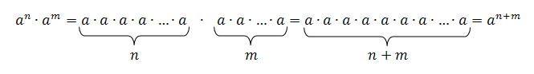
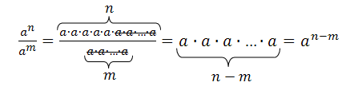
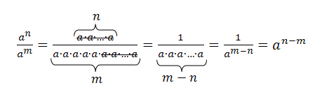
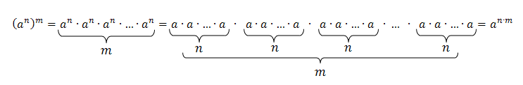
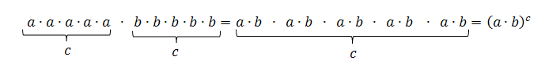
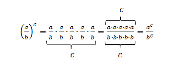

Potęgowanie
Dodawanie, odejmowanie, mnożenie i dzielenie to dopiero przedsmak tego, co można wyczyniać z liczbami. Jeśli już wydawało Ci się, że posiadasz pewną władzę nad arytmetyką, czas zobaczyć, czym w matematyce jest prawdziwa potęga.
Intuicje
Przypomnijmy sobie pierwsze kroki, jakie stawialiśmy w świecie matematyki, poznając, czym jest mnożenie. Zdefiniowaliśmy je jako wielokrotne dodawanie do siebie tej samej liczby:
$$ 3+3+3+3+3=5 \cdot 3 $$Pięciokrotne dodanie do siebie trójki oznaczaliśmy jako „pięć razy trzy”, propagując, że mnożenie jest działaniem wyższego rzędu niż dodawanie. Na tej samej zasadzie definiujemy potęgowanie, jako działanie wyższego rzędu niż mnożenie:
$$ 3 \cdot 3 \cdot 3 \cdot 3 \cdot 3=3^5 $$Pięciokrotne pomnożenie przez siebie trójki oznaczamy jako „trzy do potęgi piątej” i zapisujemy to jako trójkę posiadającą w indeksie górnym piątkę. Liczba, którą mnożymy przez siebie wielokrotnie, to podstawa potęgi, a ilość mnożeń, jakich dokonujemy (mała liczba w prawym górnym rogu), to wykładnik potęgi.
W zagadnieniach informatycznych potęgę zapisujemy z użyciem symbolu $ \text{^}$ widocznego na klawiszu $6$ klawiatury komputera.
$$ 3 \cdot 3 \cdot 3 \cdot 3 \cdot 3=3 \text{^}5 $$Jest to wygodny zapis, gdy nie mamy możliwości sformatowania tekstu w indeksie górnym.
Formalnie
Formalna definicja potęgi o wykładniku naturalnym przedstawia się następująco:
Definicja ta mówi, że pod $a$ oraz $n$ możemy podstawić dowolne liczby i zinterpretować napis $a^n$ jako pomnożenie liczby $a$ przez siebie $n$ razy. W takim zapisie liczba $a$ jest podstawą potęgi, zaś liczba $n$ to wykładnik potęgi, a sam zapis $a^n$ nazywamy potęgą liczby $a$.
Rozszerzenie
Co ciekawe, chociaż dodawanie oraz mnożenie są działaniami łącznymi i przemiennymi, potęgowanie nie jest ani łączne, ani przemienne:
- $2^3=2 \cdot 2 \cdot 2=8$ nie jest tym samym co $3^2=3 \cdot 3=9$
- $(2^2 )^3=(2 \cdot 2)^3=4^3=4 \cdot 4 \cdot 4=64$ nie jest tym samym, co $2^{2^3}=2^{2 \cdot 2 \cdot 2}=2^8=2 \cdot 2 \cdot 2 \cdot 2 \cdot 2 \cdot 2 \cdot 2 \cdot 2=256$
Intuicje
W praktyce potęgowanie pełni rolę narzędzia matematycznego, dzięki któremu nie musimy pisać nużąco długich iloczynów, gdy jako czynnik pojawia się kilka razy ta sama liczba. Im dalej zagłębiamy się w matematyczne fantazje, tym bardziej oddalamy się od przyziemnych, namacalnych, życiowych zagadnień, przez co ilustrowanie matematyki "codziennymi" problemami staje się niemożliwe. Potęgowanie stoi jeszcze na granicy abstrakcji i przy odrobinie dobrej woli możemy zobaczyć potęgowanie w akcji.
Potrzebujemy klocków. Dużo klocków. Potęgowanie może być dobrą zabawą, a żeby tego dowieźć ustawimy klocki jeden obok drugiego, wzdłuż linii:
Pięć klocków w jednej linii możemy postrzegać jako $5^1$, jakby piątka występująca w iloczynie tylko jeden raz. Następnie rozmieśćmy klocki na podłodze, jeden obok drugiego w regularnych rządkach i kolumnach:
Mamy pięć poziomych rzędów, a w każdym z nich mieści się pięć klocków, czyli razem:
$$ 5 \cdot 5=5^2 $$Jeżeli masz pewną wprawę w rozpoznawaniu kształtów geometrycznych, możesz zauważyć, że powyższy obrazek przedstawia klocki ułożone w kwadrat. Z tego powodu drugą potęgę liczby nazywamy kwadratem tej liczby. Będziemy więc mówić, że „$25$ jest kwadratem liczby $5$” lub że „$5$ do kwadratu wynosi $25$”. Postępując dalej w naszym szaleństwie, ułóżmy kwadraty z klocków w warstwy, jedna nad drugą:
Liczba klocków w naszej pokaźnej konstrukcji wynosi
$$ 5 \cdot 5 \cdot 5=5^3 $$ponieważ składa się ona z $5$ warstw, a każda ma $25$ klocków. Kształt, który przypomina nasza konstrukcja, to sześcian i z tego powodu trzecią potęgę liczby nazywamy sześcianem tej liczby. Będziemy mówić, że „$125$ jest sześcianem liczby $5$” lub że „$5$ do sześcianu wynosi $125$”. Niestety tu nasza wizualizacja się kończy, jak również kończy się specjalne nazewnictwo kolejnych potęg. $5^4$ będziemy czytać po prostu jako „pięć do potęgi czwartej”. Graficzna reprezentacja czwartej potęgi wymagałaby właściwie czegoś w rodzaju czwartego wymiaru przestrzennego, a my jeszcze nie jesteśmy gotowi na SF.
Warsztat
Wkrótce okaże się, że znajomość kwadratów i sześcianów niewielkich liczb naturalnych jest bardzo pomocna, by nabrać biegłości w rachunkach. Jeśli zależy Ci na osiągnięciu poziomu oficera, a nie jedynie marnego kadeta, przyzwyczaj swoje oczy do tych wartości:
| $0^2=0$ | $0^3=0$ |
| $1^2=1$ | $1^3=1$ |
| $2^2=4$ | $2^3=8$ |
| $3^2=9$ | $3^3=27$ |
| $4^2=16$ | $4^3=64$ |
| $5^2=25$ | $5^3=125$ |
| $6^2=36$ | $6^3=216$ |
| $7^2=49$ | $7^3=343$ |
| $8^2=64$ | $8^3=512$ |
| $9^2=81$ | $9^3=729$ |
| $10^2=100$ | $10^3=1000$ |
| $11^2=121$ | $11^3=1331$ |
| $12^2=144$ | $12^3=1728$ |
| $13^2=169$ | $13^3=2197$ |
| $14^2=196$ | $14^3=2744$ |
| $15^2=225$ | $15^3=3375$ |
| $16^2=256$ | $16^3=4096$ |
| $17^2=289$ | $17^3=4913$ |
| $18^2=324$ | $18^3=5832$ |
| $19^2=361$ | $19^3=6859$ |
| $20^2=400$ | $20^3=8000$ |
Aby uchodzić za człowieka wykształconego, powinieneś dobrze znać kwadraty i sześciany pierwszych dziesięciu liczb naturalnych.
Intuicje
Ponieważ mnożenie jest działaniem wyższego rzędu niż dodawanie, wykonujemy je jako pierwsze w działaniu. Podobnie, skoro potęgowanie jest działaniem wyższego rzędu niż mnożenie, będzie ono miało pierwszeństwo przed mnożeniem. Zaktualizowana kolejność wykonywania działań wyglądałaby następująco:
- Działania w nawiasach;
- Potęgowanie;
- Mnożenie i dzielenie w kolejności występowania;
- Dodawanie i odejmowanie w kolejności występowania.
Tak więc:
- $3 \cdot 4^{2+1}+5=3 \cdot 4^3+5=3 \cdot 64+5=192+5=197$
- $6:3^2-(6:3)^2=6:9-2^2=\frac{2}{3}-4=-\frac{10}{3}$
- $2^{3^2}=2^9=512$
- $5^2-4^2-(-3)^2=25-16-9=0$
Warto mieć na uwadze, że zapis $-2^4$ oznacza „dwa do czwartej na minusie”, czyli liczbę ujemną o wartości $-16$, ale zapis $(-2)^4$ to czwarta potęga liczby $-2$, a więc $16$.
Intuicje
Potrafimy już rozpracowywać zapiski typu $a^n$, gdzie $n$ jest jakąś liczbą naturalną typu $1$, $2$, $3$, $4$, $5$… zaś $a$ może być dowolną znaną nam liczbą: dodatnią, ujemną, ułamkową... W ramach ćwiczenia:
- $2^5=2 \cdot 2 \cdot 2 \cdot 2 \cdot 2=32$
- $(-3)^4=(-3) \cdot (-3) \cdot (-3) \cdot (-3)=81$
- $(\frac{5}{4})^2=\frac{5}{4} \cdot \frac{5}{4}=\frac{25}{16}$
- $(-\frac{1}{7})^3=(-\frac{1}{7}) \cdot (-\frac{1}{7}) \cdot (-\frac{1}{7})=-\frac{1}{343}$
Warto zauważyć kilka podstawowych cech potęgowania:
- Dowolna liczba podniesiona do potęgi pierwszej to ta sama liczba: $$ a^1=a $$
- Jedynka podniesiona do dowolnej potęgi wynosi zawsze $1$: $$ 1^n=1 $$
- Zero podniesione do dowolnej potęgi wynosi zawsze $0$: $$ 0^n=0 $$
- Liczba ujemna podniesiona do potęgi parzystej daje wynik dodatni, a do potęgi nieparzystej ujemny: $$ \text{Jeśli} \ a \lt 0 \text{, to} \ a^n \gt 0 \ \text{dla} \ n \ \text{parzystych oraz} \ a^n \lt 0 \ \text{dla} \ n \ \text{nieparzystych} $$
Zastanówmy się, co się stanie, gdy podniesiemy liczbę do potęgi ujemnej. Warto zwrócić uwagę, że gdy podnosimy liczbę do coraz wyższych potęg, przy każdym kroku mnożymy poprzedni wynik przez tę liczbę:
Możemy spojrzeć na to z drugiej strony: gdy podnosimy liczbę do coraz niższych potęg, przy każdym kroku dzielimy poprzedni wynik przez podstawę:
Trzymając się tendencji, pójdźmy jeszcze o kilka kroków w lewo:
Ukradkiem wyłoniła się prosta zależność:
- $3^{-1} = \frac{1}{3}$, podczas gdy $3^1=3$
- $3^{-2} = \frac{1}{9}$, podczas gdy $3^2=9$
- $3^{-3} = \frac{1}{27}$, podczas gdy $3^3=27$
- $3^{-4} = \frac{1}{81}$, podczas gdy $3^4=81$
Powyższe tendencje stanowią dobrą podstawę, by zdefiniować potęgi dla wykładników całkowitych:
- Dowolna liczba podniesiona do potęgi zerowej daje $1$: $$ a^0=1 $$
- Potęga o wykładniku ujemnym jest równa odwrotności potęgi o przeciwnym wykładniku: $$ a^{-n}=\frac{1}{a^n} $$
Zauważmy, że przy badaniu potęg o ujemnych wykładnikach dokonywaliśmy dzielenia przez podstawę, a nie zapominajmy, że nie wolno dzielić przez $0$. Co za tym idzie, nie wolno podnosić zera do potęg ujemnych. Kontrowersyjne pozostaje podnoszenie zera do potęgi zerowej. Technicznie rzecz biorąc przejście z $0^1$ do $0^0$ wymagałoby podzielenia przez $0$, więc spora część matematyków nie godzi się na istnienie „zera do zerowej”. Z drugiej strony własność $a^0=1$ dotyczy dokładnie każdej liczby, zarówno dodatniej, jak i ujemnej, więc dlaczego by nie miała dotyczyć zera?... Ten dylemat podzielił matematyków – według niektórych $0^0$ nie istnieje, a według innych $0^0=1$, jakkolwiek dziwnie to nie wygląda.
Jeśli jesteś ciekaw, jak dobrać się do potęg mających ułamek w wykładniku, zajrzyj do tematu „Pierwiastkowanie”.
Formalnie
Dokonajmy jeszcze kilku przydatnych spostrzeżeń na temat potęgowania. Ponieważ zależy nam na osiągnięciu dojrzałości matematycznej, będziemy pracować na ogólnym przypadku, czyli na zmiennych literowych. W każdej chwili możesz podstawić sobie pod $a$, $b$ lub $c$ jakąś konkretną liczbę naturalną i zobaczyć, jak poniższe twierdzenia działają na żywo.
-
$a^n \cdot a^m=a^{n+m}$
Jeśli liczbę $a$ mnożymy przez siebie $n$ razy, a następnie $m$ razy, to łącznie występuje jako czynnik $n+m$ razy.Dowód
 -
$\frac{a^n}{a^m} =a^{n-m}$
Jeśli liczbę $a$ mnożymy przez siebie $n$ razy w liczniku ułamka i $m$ razy w mianowniku ułamka, to po skróceniu pozostanie $n-m$ czynników.Dowód
Jeśli $n≥m$: Jeśli $n \lt m$: - $(a^n)^m=a^{n \cdot m}$
Gdy liczbę $a$ mnożymy przez siebie $n$ razy, a następnie takie grupy $a^n$ mnożymy przez siebie $m$ razy, to w całym iloczynie $a$ wystąpi $n \cdot m$ razy.Dowód
 -
$a^n \cdot b^n=(a \cdot b)^n$
Jeśli liczbę $a$ mnożymy przez siebie $n$ razy, a do tego domnażamy liczbę $b$ również $n$ razy, to tak, jakbyśmy iloczyn $a \cdot b$ mnożyli $n$ razy.Dowód
 -
$(\frac{a}{b})^n=\frac{a^n}{b^n} $
Gdy podnosimy do potęgi pewien ułamek, możemy osobno zająć się potęgowaniem licznika oraz mianownika.Dowód

Formalnie | Rozszerzenie
wymagana znajomość tematu: Działania na wyrażeniach algebraicznych
Powyższe wzory działają także dla wykładników ujemnych. Aby tego dowieść, wykorzystamy własności dla wykładników dodatnich, które udowodniliśmy powyżej.
-
$a^k \cdot a^l=a^{k+l}$
Dowód
-
Rozważmy przypadek, gdy tylko jeden z wykładników jest ujemny (ze względu na przemienność mnożenia i dodawania, nie ma
znaczenia, który). Mamy uzasadnić równość
$$a^k \cdot a^{-l}=a^{k-l}$$
przy czym same zmienne $k$ oraz $l$ mają wartości naturalne. Wykorzystując
definicję potęgi o ujemnym wykładniku:
$$a^k \cdot a^{-l}=a^k \cdot \frac{1}{a^l} = \frac{a^k}{a^l} =a^{k-l}$$ -
W przypadku obydwu wykładników ujemnych mamy:
$$a^{-k} \cdot a^{-l}=\frac{1}{a^k} \cdot \frac{1}{a^l} =\frac{1}{a^k \cdot a^l}=\frac{1}{a^{k+l}}=a^{-(k+l) }=a^{-k-l}$$
-
Rozważmy przypadek, gdy tylko jeden z wykładników jest ujemny (ze względu na przemienność mnożenia i dodawania, nie ma
znaczenia, który). Mamy uzasadnić równość
$$a^k \cdot a^{-l}=a^{k-l}$$
przy czym same zmienne $k$ oraz $l$ mają wartości naturalne. Wykorzystując
definicję potęgi o ujemnym wykładniku:
-
$\frac{a^k}{a^l} =a^{k-l}$
Dowód
- Przypadek, gdy wykładnik potęgi w liczniku jest ujemny: $$\frac{a^{-k}}{a^l} =\frac{\frac{1}{a^k}}{a^l} =\frac{1}{a^k \cdot a^l}=\frac{1}{a^{k+l}} =a^{-(k+l) }=a^{-k-l}$$
- Przypadek, gdy wykładnik potęgi w mianowniku jest ujemny: $$\frac{a^k}{a^{-l}} =\frac{a^k}{\frac{1}{a^l}}=a^k \cdot a^l=a^{k+l}=a^{k-(-l)}$$
- Przypadek, gdy obydwa wykładniki są ujemne: $$\frac{a^{-k}}{a^{-l}}=\frac{\frac{1}{a^k}}{\frac{1}{a^l}}=\frac{1}{a^k} \cdot a^l=\frac{a^l}{a^k} =a^{l-k}=a^{-k+l}=a^{-k-(-l)}$$
-
$(a^k)^l=a^{k \cdot l}$
Dowód
- Przypadek, gdy wykładnik wewnętrznej potęgi jest ujemny: $$(a^{-k} )^l=(\frac{1}{a^k} )^l=\frac{1^l}{(a^k)^l} =\frac{1}{a^{k \cdot l}} =a^{-(k \cdot l)}=a^{(-k) \cdot l}$$
- Przypadek, gdy wykładnik zewnętrznej potęgi jest ujemny: $$(a^k )^{-l}=\frac{1}{(a^k )^l}=\frac{1}{a^{k \cdot l}} =a^{-(k \cdot l)}=a^{k \cdot (-l)}$$
- Przypadek, gdy obydwa wykładniki są ujemne: $$(a^{-k} )^{-l}=\frac{1}{(a^{-k} )^l}=\frac{1}{ (\frac{1}{a^k} )^l} =\frac{1}{ \frac{1^l}{(a^k )^l} } =\frac{1}{\frac{1}{a^{k \cdot l} }}=a^{k \cdot l}=a^{(-k) \cdot (-l)}$$
-
$a^k \cdot b^k=(a \cdot b)^k$
Dowód
Gdy wykładnik jest ujemny: $$a^{-k} \cdot b^{-k}=\frac{1}{a^k} \cdot \frac{1}{b^k} = \frac{1}{a^k \cdot b^k}=\frac{1}{(a \cdot b)^k} =(a \cdot b)^{-k}$$ -
$(\frac{a}{b})^k=\frac{a^k}{b^k} $
Dowód
Gdy wykładnik jest ujemny: $$(\frac{a}{b})^{-k}=\frac{1}{\frac{a}{b}^k} =\frac{1}{\frac{a^k}{b^k}}=\frac{b^k}{a^k}=\frac{1}{a^k} \cdot b^k=\frac{\frac{1}{a^k}}{\frac{1}{b^k}}= \frac{a^{-k}}{b^{-k}}$$